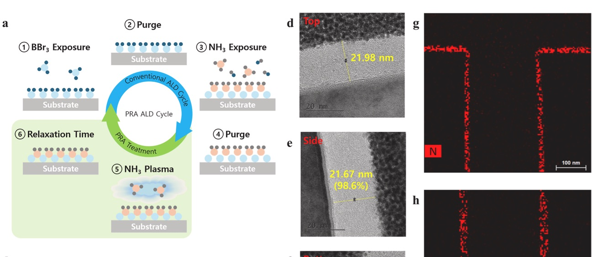

Research Areas
The ISM Lab studies thin films and interfaces for next-generation semiconductors, centered on atomic layer deposition (ALD). Below are five research themes and representative results drawn from our 2023–2026 publications. Click a figure to enlarge it.
Area-Selective ALD & High-Quality Dielectrics
Area-selective deposition (ASD) is a key technology for reducing patterning steps. Using density functional theory (DFT) and XPS, we clarified why SiO₂ and SiNₓ end up with different surfaces after HF treatment: surface SiF₂ species accumulate on SiNₓ, suppressing chemisorption of the Si precursor, while SiO₂ remains hydroxyl-terminated, enabling SiO₂ deposition. Building on this, we showed that simply adjusting the HF concentration improves deposition selectivity.
NH₃ plasma converts the SiNₓ surface to Si–NH bonds to raise selectivity, and layer-by-layer plasma treatment during growth densifies the SiO₂ film without losing selectivity. For 3D NAND tunneling oxides, high-temperature ALD from TKDMAS and an ozone-containing oxidant keeps self-limiting growth (2.9 Å/cycle) up to 700 °C, with 91–93% step coverage in aspect-ratio-24 trenches and a minimum leakage current density of 4.5×10⁻⁹ A/cm² at −1 MV/cm. We also study ZrO₂ from a thermally robust novel Zr precursor and tin silicon oxide for self-aligned double patterning (SADP) spacers.

Materials for 3D Cross-Point Memory
3D cross-point memory stacks a selector (OTS) and electrodes vertically in every cell, so ALD offers clear advantages for conformal deposition. Using Ge-Se and Ge-S super-cycles, we tuned the composition of ternary Ge-S-Se alloys over a wide range and lowered the off-current to about 35 nA.
We developed ALD tungsten carbonitride (WCₓNᵧ) top electrodes for OTS devices; the deposition temperature (240–270 °C) tunes the electrode resistivity and the device threshold voltage. The devices show selectivity above 10³, off-current below 100 nA, stable operation at 85 °C and endurance beyond 10⁷ switching cycles. For the phase-change material Sb₂Te₃, we found at the nanoscale that films start amorphous on SiO₂ and turn polycrystalline beyond 10 nm, whereas on W they grow as a layered structure from the start.

Interfaces in 2D Semiconductor Devices
2D semiconductors such as MoS₂ are promising channels beyond silicon, but depositing uniform dielectrics on them is difficult and their metal contacts are highly resistive. Using an ABC-type ALD sequence of TMA, acetic acid and H₂O, we grew Al₂O₃ gate dielectrics with reduced carbon impurities while limiting MoS₂ oxidation, achieving transistors with on/off ratios above 10⁷.
We tackle contacts in two ways. We found for the first time that making the ALD Al₂O₃ interlayer more uniform, by tuning precursor injection pressure, sharply lowers contact resistance without changing film thickness. We also formed van der Waals contacts with ALD semimetallic TiS₂, reducing the Schottky barrier to 8.54 meV. In addition, we built 2D–3D hybrid p–n diodes by growing ALD ZnO on wafer-scale WSe₂.

Low-k Dielectrics & Doping
Cutting RC delay in scaled devices requires stable dielectrics with κ below 2. We synthesized amorphous BN by plasma-relaxation-assisted ALD (PRA ALD), which adds an NH₃ plasma step and a vacuum relaxation step to every thermal ALD cycle. The films reach a density of 2.17 g/cm³ while staying amorphous, show κ of about 1.4 at 1 MHz, and barely change in thickness after 90 days in air. TEM confirmed uniform coverage in high-aspect-ratio trenches.
Combining an ALD B₂O₃ dopant layer with non-melt laser annealing at 250–300 mJ/cm², we also formed ultra-shallow p⁺ junctions shallower than 20 nm with smooth surfaces. p⁺/n diodes made from these junctions show differential ideality factors of 1.01 and 1.03 at 0.04 V.

Sensors, Catalysts & Advanced Packaging
To overcome the slow recovery of 2D gas sensors, we let ALD Al₂O₃ grow selectively on defects and grain boundaries of MoS₂ and WS₂ to passivate them. The sensors respond 400% to 10 ppm NO₂ at room temperature while their recovery rate rises from 74% to 96%. Using machine learning, a two-stage classification model identified NO₂, NH₃ and their mixtures with over 90% accuracy, and a separate selective denoising autoencoder (SDAE) model exceeded 95% accuracy even in noisy environments.
For energy, we boosted hydrogen evolution by depositing ALD Pt on vertically grown ALD MoS₂ nanosheets on graphite, and optimized oxygen-evolution catalysts by tuning the crystallinity and thickness of ALD RuO₂. We also developed RuS₂ₓSe₂₋₂ₓ near-infrared photodetectors with a bandgap tunable from 0.52 to 1.39 eV. Most recently, we are extending our work to advanced packaging through ALD SiO₂ passivation for through-glass vias (TGVs), evaluated by finite element analysis (FEA) for thermal-stress reduction, and ultra-fine hole processing for PCBs.